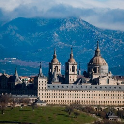
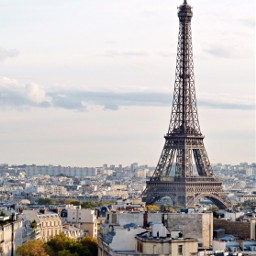

Страны Евросоюза
Евросоюз включает в себя 28 стран. Ниже представлены некоторые из этого списка.
Эстония
Великобритания
Испания
Франция


Эсто́ния (эст. Eesti), официальное название — Эсто́нская Респу́блика — государство, расположенное в Северной Европе, на восточном побережье Балтийского моря, омываемое водами Финского и Рижского заливов. На востоке граничит с Россией (протяжённость границы — 294 км), на юге — с Латвией (339 км). На севере, в Финском заливе, проходит морская граница с Финляндией. На севере и западе омывается водами Балтийского моря.
Великобрита́ния (русское название от англ. Great Britain) или Соединённое Короле́вство (United Kingdom [jʊnaɪtɪd kɪŋdəm], сокращённо: UK), полная официальная форма — Соединённое Королевство Великобрита́нии и Се́верной Ирла́ндии (англ. The United Kingdom of Great Britain and Northern Ireland), — островное государство на северо-западе от континентальной Европы.
Испа́ния (исп. и галис. España), официально Короле́вство Испа́ния (исп. и галис. Reino de España МФА [ˈreino ðe esˈpaɲa]) — суверенное государство на юго-западе Европы и частично в Африке, член Европейского союза и НАТО. Испания занимает бо́льшую часть (80 %) Пиренейского полуострова, а также Канарские и Балеарские острова, имеет общую площадь 504 782 км² (вместе с небольшими суверенными территориями на африканском побережье, городами Сеута и Мелилья), являясь четвёртой по величине страной в Европе (после России, Украины и Франции).
Фра́нция (фр. France, [fʁɑ̃s] Информация о файле слушать), официальное название Францу́зская Респу́блика (фр. République française, [ʁe.py.blik fʁɑ̃.sɛz] Информация о файле слушать) — трансконтинентальное государство, включающее основную территорию в Западной Европе и ряд заморских регионов и территорий. Столица — Париж. Девиз Республики — «Свобода, Равенство, Братство», её принцип — правление народа, народом и для народа.
Столица - Таллинн

Столица - Лондон

Столица - Барселона

Столица - Париж

К XIII столетию Эстония столкнулась с христианством и затем была христианизирована, оказавшись под властью Тевтонского ордена и датчан. В этот период земли Эстонии оказываются в руках немецких помещиков, обладавших здесь огромным влиянием в течение последующих 700 лет. Территория современных Эстонии и Латвии становится средневековой Ливонией - группой слабо связанных между собой небольших государств, входивших в немецкие церковные государства Священной Римской империи.
В 1248 году датский король даровал Таллину, являвшемуся жемчужиной средневековой Эстонии, привилегии Любекского городского права, по которому управление столицей Эстонии и многими другими городами осуществлялось до конца XIX века. В то время основные города Эстонии - Таллин, Тарту, Пярну и Вильянди - были официальными членами процветающего Ганзейского союза, коммерческого и оборонительного объединения купеческих гильдий и их рыночных городов, коллективного монополиста морской торговли в Северной Европе. Если вы отправитесь на прогулку в Старый город Таллина, то непременно увидите старинные соляные склады и кладовые для чая и муки с торчащими над чердачной дверью крюками для поднятия груза.
Эстонская Республика стала независимым государством в 1918 году, но вскоре, в ходе Второй мировой войны, независимость была нарушена продлившейся почти пятьдесят лет советской оккупацией. Эстония восстановила независимость в 1991 году в результате событий, известных как Поющая революция и вдохновленных столетней традицией Певческих праздников.
Великобритания - страна с древней и богатой историей. Самые ранние свидетельства о пребывания человека на Британских островах относятся к 250000 году до н.э. Однако из-за наступления ледникового периода эта цивилизация не получила развития. В 1-м тысячелетии до н.э. территорию современной Британии населили кельты. Они жили отдельными племенами и занимались земледелием, скотоводством, ткачеством и даже торговлей.
В начале XVII века, благодаря шотландскому королю Якову VI (Яков I), Шотландия и Англия, наконец, объединились. Однако акт о единой Великобритании был подписан лишь в 1707 году. Тогда же Лондон был избран столицей государства. Присоединение Ирландии относится к 1801 году. В середине XVII века произошла ожесточенная борьба между правящей династией Стюартов и парламентом. В результате права монархии были значительно урезаны, а в Англии воцарилась республика под управление О. Кромвеля. За XVIII век Британия растеряла ряд колоний в Северной Америке, но значительно укрепила свои позиции в Индии.
Роль Англии в разгроме наполеоновской армии велика. После этого она укрепила свои позиции в качестве ведущей европейской державы. XIX век проходил под лозунгом мира и расширения британских колоний. Особенно благоприятно повлияла на развитие страны королева Виктория (1837-1901). Экономический кризис охватил страну по время Первой мировой войны, чем незамедлительно воспользовалось Ирландское освободительное движение. В 1921 году Ирландия объявила себя независимым государством. Борьба за независимость от Соединенного Королевства продолжалась на протяжении всего XX века, а в Шотландии и Северной Ирландии периодически вспыхивали национальные проблемы. На сегодняшний день Великобритания является членом ЕС и одним из крупнейших государств Европы.
В V веке на Пиренейском полуострове наблюдался наплыв варваров - многочисленных германских племен. Среди них были вестготы, вандалы, аланы, свевы и другие сообщества. Вестготам удалось вытеснить другие племена и создать свое королевство со столицей в Барселоне. В VIII веке, объединившись со свевами, они вытеснили с юго-востока византийцев. Около 300 лет вестготы правили страной, что, несомненно, отразилось на культуре полуострова. Однако единой нации им так и не удалось создать из-за частых заговоров и интриг. В первой половине VIII века полуостров заполонили мавры из Северной Африки, которые всего за несколько лет распространили ислам. Господство мавров продлилось до XI века, после чего халифат распался на мелкие независимые княжества.
Наибольшего расцвета страна достигла в XVI веке. В этот период появились новые колонии в Южной и Центральной Америке, также была завоевана Португалия (1580 г.) Следующее столетие было омрачено бесконечными войнами, потерей влияния в Европе, экономическим упадком, инквизицией и борьбой за престол. В результате, в начале XVIII века в Испании воцарилась власть Бурбонов. При поддержке монархистов в 1854 году престол перешел к Изабелле II. В конце XIX века разгорелась война с Америкой, бывшие испанские колонии отошли к США.
В первой половине XX века Испанию одолевали внутренние распри, после чего страна разделилась на два лагеря: республиканское правительство и националисты. В итоге победа досталась оппозиции националистов во главе с диктатором Ф. Франко. После его смерти власть перешла к королю Хуан Карлосу I. Диктаторский режим сменился демократией, была принята новая конституция. В 1986 году Испания стала членом ЕС. В 1992 году в Барселоне прошли XV летние Олимпийские игры.
Предками современного французского народа были германские племена франков, проживавших на берегу Рейна в III веке. Однако история французской территории началась гораздо раньше, в доисторический период. Исследования показали, что питекантропы населяли земли Галлии около 1 млн. лет назад. Со временем их сменили homo sapiens, то есть предки современного человека. Об этом периоде сведений практически нет.
С XII века началось Позднее Средневековье - противоречивая эпоха для французского народа. С одной стороны, это было время расцвета искусства, поэзии, архитектуры, а с другой наблюдались серьезные кризисы. Так, в XIV веке повсеместно вспыхивали эпидемии чумы, началась Столетняя война с Англией. Однако распри в стране после этой войны не закончились. Во время правления династии Валуа начались столкновения между католиками и гугенотами, закончившиеся Варфоломеевской ночью 24 августа 1572 года. В эту ночь в массовой резне гугенотов погибло около 30 тысяч людей.
С 1814 года начался период восстановления монархии. Сначала к власти пришел Людовик XVIII, затем Карл X, а после него Луи-Филипп Орлеанский. В середине XIX столетия произошла еще одна революция, после чего власть перешла к Временному правительству. Такая смена правителей происходила до тех пор, пока Франция в пятый раз получила статус республики и назначила президентом генерала де Голля (1959-1969). Именно он был задействован в освобождении страны от немецких оккупантов и восстановлении экономического баланса.
Эстония
Великобритания
Испания
Франция
Наверх
Крючкова Вера. IVKHK 2018